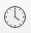
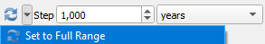

Praktikum 19 Veebirakendused, veebimajutus (2)
Eelmisel korral vaatasime, kuidas qgis2web plugina abil hõlpsalt oma QGISis tehtud kaardikihte veebikaardina jagada.
Sel korral vaatame esmalt,
- mis võimalusi on QGISis ajalise dimensiooni kaasamiseks (nt mingite muutuste kuvamiseks),
- kuidas ajadimensiooni võrdlemisi lihtsalt Mapbox GL JSi API abil veebirakenduses kuvada.
Kasutame sel korral Eesti filmi andmebaasist kogutud andmeid selle kohta, milliseid geograafilisi kohti läbi aegade Eesti filmides näha on olnud. Selleks on andmebaasis lisaks tavalistele märksõnadele märgendatud eraldi ka kohanimed. Selle kursuse tarbeks korjasime need R-i skriptiga kokku ning eri aastate peale kokku vähemalt 5 korda esinenud kohanimede koordinaatidega sidumiseks kasutasime Maa-ameti geokodeerimise teenust.
Kohad, millele teenuses mingid koordinaadid määrati, oleme üle vaadanud ning nende punktid enam-vähem õigesse kohta liigutanud (seega koordinaatide ja atribuudi Taisaadress andmed ei pruugi alati klappida). Kohtadele, mis koordinaate ei saanud, ei ole koordinaate ka eraldi lisatud.
Laadime saadud andmestiku efis_parandatud.gpkg QGISi. Valime QuickMapServices kaudu ka mingi sobiva aluskaardi. Määrame projekti CRS-iks EPSG:3857.
19.1 Ajatelje kasutamine QGISis
- Filtreerime andmestikust kõigepealt välja ainult need read, kus aastaarvud on olemas.
- Kuna Eesti kohta on info oluliselt detailsem kui välismaa kohta, piirame oma veebikaardi samuti ainult Eesti alaga. Kasutame selleks Select Features by Freehand tööriista, et tõmmata ümber Eesti ala piiri, mille seest punkte valida.
- Salvestame tehtud valiku eraldi kihina. Nimetame selle nt nimega efis_eesti.gpkg.
- Eemaldame punktidelt äärejooned, valime punktidele värvid, teeme need läbipaistvamaks ning määrame punktide suuruse vastavalt sellele, kui palju mingit kohta mingil aastal filmides näidatud oli (tulp n, mille väärtuseid võiks lineaarselt kujutada suuruste kaudu 2 mm-st kuni 15 mm-ni: Data defined override → Assistant → Source: n, Values from: 1, to: 10, Size from: 2, to: 15, Scale method: Radius).
- Kuna aastaarvu sisaldav tulp on hetkel andmestikus tekstikujul ja sisaldab ka ajavahemikke (nt 1940-1941), tekitame andmestikku kaks uut tulpa:
- nimetame esimese tulba nimega aasta1, kus oleks arvu kujul ainult 4 esimest numbrit aasta tulbast:
to_int(left("aasta", 4)).
- Seejärel teeme tulba nimega kuupaev, paneme tulbale
aasta1ümber funktsioonito_date(), mis muudab aastaarvu kuupäevaks:to_date("aasta1", 'yyyy')ja määrame aasta viitepunktiks mitte 1. jaanuari, vaid juuni lõpu:to_date("aasta1", 'yyyy') + to_interval ('6 months').
- nimetame esimese tulba nimega aasta1, kus oleks arvu kujul ainult 4 esimest numbrit aasta tulbast:
Joonis 19.1: Eesti filmidega seotud kohad ja uued tunnused atribuuttabelis
- Teeme nüüd efis_eesti kihil paremkliki ning valime Properties. Vasakult menüüst valime Temporal ja teeme linnukese valiku ette Dynamic Temporal Control.
- Kuna meil on andmestikus nüüd kuupäeva tulp, saame valida konfiguratsiooniks väärtuse Single Field with Date/Time ning Field väärtuseks loodud tulba kuupaev. Vajutame OK.
Joonis 19.2: Ajadimensiooni kasutamine QGISis
- Valime järgmiseks menüüribalt, kus on nt ka salvestamise ja suumimise ikoonid, kella pildiga tööriista Temporal Controller Panel . Kui seda ikooni ei ole menüüs näha, siis saab minna View → Panels → Temporal Controller ja teha sinna ette linnuke.
- Avanenud menüüs vajutame rohelise noolekesega nupule Animated temporal navigation . Animation range’i saame määrata värskendamise ikooni juurest: Set to Full Range ja lahutame algusaastast ühe (1921. aasta asemel niisiis 1920). Ajatelje “sammuks” määrame 1 aasta.
 - Vajutame animatsiooni mängimise nupule ning seejärel peaks nägema, kuidas kaardile ilmuvad igal aasta filmidega seotud olnud kohad ning nende ikoonide suurus vastab sellele, kui mitme filmiga need sel aastal seotud olid.
- Võime kuvada kaardil ka aastaarvu, et oleks lihtsam jälgida: View → Decorations → Title Label. Teeme linnukese valiku ette Enable Title Label, valime Insert or Edit an Expression ja trükime avaldise kasti
year(@map_start_time)+1'.
Joonis 19.3: QGIS Temporal Controller
QGIS ei lase animatsiooni gif-ina salvestada, vaid kõik 100 pilti (aastatest 1921-2021) salvestatakse eraldi pildifailidena ning neid tuleb eraldi animeerida mõnes teises programmis, nt Ezgifi veebipõhises programmis.
Selline gif on aga põhimõtteliselt lihtsalt liikuv pilt ning kasutajal ei ole võimalik andmeid kuidagi oma soovidele vastavalt põhjalikumalt uurida.
19.2 Ajadimensioon Mapbox GL JS APIs
Mapboxi JavaScripti API sisaldab hulka funktsioone, mille abil on võimalik veebilehel või veebirakenduses näidata interaktiivseid veebikaarte ning näidata andmeid vastavalt kasutaja tegevusele ja valikutele. API funktsioonid on üsna põhjalikult kirjeldatud ning samuti on võimalik kasutada olemasolevaid näiteid ja õpetusi, et täiendada oma veebikaarti just endale vajalike funktsionaalsustega.
Teeme siin lihtsa rakenduse, kus kasutaja saab liuguri abil vaadata eri aastate filmide kohaandmeid. Nagu eelmisel korral räägitud, kasutavad veebirakendused vähemalt kolme elementi: HTMLi, mis annab leheküljele struktuuri, CSSi, mis annab leheküljele kujunduse, ja JavaScripti, mis annab lehele interaktiivsuse.
Salvestame efis_eesti geojsoni failina ja EPSG: 4326 projektsioonis. Ühtlasi eemaldame salvestamisel ebavajalikud tulbad, mis nt geokodeerimisega kaasa tulid.
Avame geojsoni faili mingis tekstiredaktoris (nt Notepad või Notepad++) ning kustutame failist ära rea, mis algab "crs": { "type": "name", "properties": ja salvestame. See samm on vajalik selleks, et laadida geojsoni formaadis fail natukese aja pärast Mapbox Studiosse.
19.2.1 HTML
Kõigepealt teeme valmis lihtsa HTML-i struktuuri, kus oleks päis ja keha ning kus kehas oleksid olemas meie lehekülje struktuurielemendid:
- kaart,
- kirjeldustekst,
- liugur.
Avame mingi tekstiredaktori ning kopeerime sinna alloleva koodi. Salvestame faili nimega index.html.
<!DOCTYPE html>
<html>
<head>
</head>
<body>
<div id = "kaart"></div>
<div id = "kirjeldus">
<div id = "liuguri_jaotis">
</div>
</div>
</body>
</html>Avame nüüd faili index.html mingis veebibrauseris. Esialgu peaks nägema lihtsalt tühja lehte.
Päisesse peab Mapboxi APIt kasutades minema alati üsna kindel info. Seega kopeerime <head></head> märgendite vahele alloleva koodi:
<meta charset = "utf-8"/>
<meta name='viewport' content='width=device-width, initial-scale=1' />
<title>Kohad Eesti filmides</title>
<script src='https://api.tiles.mapbox.com/mapbox-gl-js/v2.11.0/mapbox-gl.js'></script>
<link href='https://api.mapbox.com/mapbox-gl-js/v2.11.0/mapbox-gl.css' rel='stylesheet' />Samuti saame kohe ära määrata, mida tahame kehaosas <body> ja </body> märgendite vahel näidata kirjeldava tekstina. Lisame kirjelduse <div>-märgendite vahele, enne liuguri jaotist, kirjelduse pealkirja ja info andmete päritolu kohta:
<h1>Eesti filmidega seotud kohad aastatel 1921-2021</h1>
<p>Andmed: efis.ee</p>
Värskendame brauseris lehte index.html, et näha, mis muutus.
Lõpuks saame veel määrata, mis toimub liuguri jaotises. Lisame sinna aastaarvu, mis vastavalt kasutaja valikule muutuma hakkab, ning liuguri enda. Liugurile anname ka eraldi ID ja klassi, mille kaudu sellele CSSis ja JavaScriptis viidata saame.
<h2>Aasta: <label id="parasjagu_aasta">1921</label></h2>
<input id="liugur" class="slider" type="range" min="1921" max="2021" value="1921" />19.2.2 CSS
Järgmiseks võiksime panna paika CSSi. Selle võib ära kirjeldada eraldi css-laiendiga failis või HTML-i struktuuris <style></style> märgendite vahel. Lisame päise lõppu, enne </head> märgendit, niisiis veel info elementide kujunduse ja paigutuse kohta.
<style>
body {
margin: 0;
padding: 0;
font-family: Helvetica, Arial, sans-serif;
}
#kaart {
position: absolute;
top: 0;
bottom: 0;
width: 100%;
}
#kirjeldus {
position: absolute;
width: 260px;
margin: 10px;
padding: 10px 20px;
background-color: white;
}
.slider {
width: 100%;
}
</style>Värskendame taas loodud veebilehte, et näha, mis muutus.
19.2.3 JavaScript
Nüüd liigume Mapbox Studiosse. Oma veebirakenduses kasutame nii Mapboxis stiliseeritud aluskaarti kui ka Mapboxi tilesetidesse laaditud Eesti filmi andmebaasi geojsoni formaadis andmeid.
Esmalt võib stiliseerida mingi kaardipõhja, mida oma rakenduses kasutada: Styles → New style. Kaardil võiksid olla halduspiirid, riigipiirid, maa, vesi ja taevas. Stiil tuleks teha ka avalikuks: Share → Allow copying → Make public. Aja kokkuhoiu mõttes võib kasutada juba kujundatud kaardistiili, mille andmed on Moodle’is failis mapboxi_andmed.txt.
Järgmiseks laadime Mapbox Studiosse üles oma efis_eesti.geojson faili, kust on CRS-rida ära kustutatud: Datasets → New Dataset → Upload. Kui andmestik on dataset’ina üles laaditud, siis ekspordime selle omakorda tileset’iks: Export to tileset. Teeme ka tileset’i avalikuks (Make public).
Failis mapboxi_andmed.txt on ka tileset’i andmed neile, kel ei ole Mapboxi kontot.
Nüüd lisame oma HTML-faili <body>-jaotisesse pärast olemasolevaid <div>-jaotisi uue jaotise <script></script> märgendite vahele. Siia tuleb nüüd JavaScripti osa, mis kasutab Mapboxi APIt. Kõik, mis on pärast märke //, on kommentaar, mis koodi kirjeldab, ent ei tee ise midagi.
Minimaalselt on vaja kaardi tegemiseks allolevat koodi. See näitab HTML-failis meie stiliseeritud aluskaarti, ära tuleks vahetada ainult juurdepääsuluba ja kaardistiili aadress, mille saab Mapbox Studios enda loodud stiili juurest vastavalt Share → Developer resources → Web → Access token ja Share → Developer resources → Web → Style URL.
<script>
// aluskaart
mapboxgl.accessToken = 'pk.sinukaardistiilijuurdepääsuluba'; // kaardistiili juurdepääsuluba
const map = new mapboxgl.Map({
container: 'kaart', // millises html-i jaotises kaarti hoida?
style: 'mapbox://styles/sinukasutaja/stiiliaadress', // mapboxi kaardistiili aadress
center: [24.89, 58.64], // aluskaardi keskpunkti koordinaadid
zoom: 6.5 // sissesuumimise tase
});
</script>
Järgmiseks võiksime lisada kaardile ka Mapboxi laaditud filmikohtade tileset’i punktid. Selleks lisame olemasolevate <script>-märgendite vahele, pärast aluskaardi koodi, alloleva koodi, mis pärast aluskaardi laadimist määrab ära meie punktiandmete allika Mapboxis ning seejärel lisab sealt allikast punktid veebirakenduse aluskaardile. Sedapuhku tuleb koodis asendada nüüd avalikuks tehtud tileset’i aadress (tileset tuleb esmalt teha avalikuks!).
// punktandmed
// kui aluskaart on laadinud, siis...
map.on('load', () =>{
// määra punktandmete allikas (nimetame selle nimega "filmid")
map.addSource('filmid', {
type: 'vector', // andmetüüp on vektorandmed
url: 'mapbox://sinukasutaja.tilesetiaadress' // mapboxi tileseti aadress
});
// lisa aluskaardi peale määratud allikast (punkti)kiht
map.addLayer({
'id': 'eesti_filmid', // nimetame kihi nimega "eesti_filmid"
'type': 'circle', // andmetüüp on (täitevärviga) punkt
'source': 'filmid', // andmete allikas on eelnevalt loodud objekt "filmid"
'source-layer': 'efis_eesti', // geojsoni kihi enda nimi on "efis_eesti"
'paint': {
'circle-color': '#f3a6b2', // punktide värv roosa
'circle-stroke-color': 'transparent', // punktide äärejoon läbipaistev
'circle-opacity': 0.4, // punktide väljapaistvus 0.4
'circle-radius': { // punkti suuruse võtame
property: 'n', // andmestiku tunnusest "n"
stops: [[1, 8], [10, 36]] // kui n = 1, siis on punkti suurus 8, kui n = 10, siis 36, teised jäävad ühtlaselt nende vahepeale
}
}
});
});Nüüd tuleks teha ka midagi selleks, et liugur kaardil toimuvaga kuidagi seotud oleks. Lisame skriptiosa lõppu, map.on('load', ... jaotise sisse niisiis veel mõned read koodi.
Kood küsib veebilehelt, mida kasutaja liuguri väärtuseks on määranud, ning filtreerib näidatavalt punktikihilt välja ainult vastava aastaarvuga read. Samuti muudab skript parasjagu_aasta väärtust rakenduse kirjelduses.
// muuda kaarti ja aasta loendurit vastavalt liuguri liigutamisele
document.getElementById('liugur').addEventListener('input', (e) => {
const kasutaja_aasta = parseInt(e.target.value); // võta kasutaja sisend (= aastaarv liugurilt) ja salvesta see objekti "kasutaja_aasta"
// muuda kaarti:
// määra kihile "eesti_filmid" filter, millega
// filtreerid kogu andmestikust välja ainult need read, kus
// tulbas "aasta1" on sama väärtus, mis objektil "kasutaja_aasta"
map.setFilter('eesti_filmid', ['==', ['number', ['get', 'aasta1']], kasutaja_aasta]);
// muuda aasta loendurit kirjelduses:
// määra HTML-is elemendile id-ga "parasjagu_aasta" sama väärtus, mille kasutaja liuguril valib
document.getElementById('parasjagu_aasta').innerText = kasutaja_aasta;
});Lõpetuseks võiksime veel lisada sellise funktsionaalsuse, et kui kasutaja mõnel punktil klikib, näidatakse talle meie (filtreeritud) eesti filmide kohtade punktikihilt popup’i sees punkti alla jääva koha nime ja selle esinemiskordade arvu mingil aastal. Selleks lisame pärast map.on('load'... }); ja enne </script> märgendit veel eraldi koodilõigu.
// lisa popup, kui kasutaja mõnel kaardil klikib
map.on('click', (event) => {
// kui klikitakse, siis võta kihilt "eesti_filmid"
// punktid, mis klikkimise piirkonda jäävad
const features = map.queryRenderedFeatures(event.point, {
layers: ['eesti_filmid']
});
// kui ei jää ühtegi punkti
if (!features.length){
return; // ära näita midagi
}
// kui jääb mõni punkt
const feature = features[0]; // siis võta neist kõige esimene
// tee popup, mis paikneks punktist kaardil natuke ülevalpool
const popup = new mapboxgl.Popup({offset: [0, -15]});
// sea popupi koordinaatideks punkti koordinaadid andmestikus
popup.setLngLat(feature.geometry.coordinates);
// määra popupi sisu (koht + esinemiskordade arv)
popup.setHTML('<h3>' + feature.properties.koht + '</h3><p>Esinemiskordi: ' + feature.properties.n + '</p>')
// lisa popup kaardile
popup.addTo(map);
});Terve veebilehe kood näeb nüüd välja niisiis järgmine:
<!DOCTYPE html>
<html>
<head>
<meta charset = "utf-8"/>
<meta name='viewport' content='width=device-width, initial-scale=1' />
<title>Kohad Eesti filmides</title>
<script src='https://api.tiles.mapbox.com/mapbox-gl-js/v2.11.0/mapbox-gl.js'></script>
<link href='https://api.mapbox.com/mapbox-gl-js/v2.11.0/mapbox-gl.css' rel='stylesheet' />
<style>
body {
margin: 0;
padding: 0;
font-family: Helvetica, Arial, sans-serif;
}
#kaart {
position: absolute;
top: 0;
bottom: 0;
width: 100%;
}
#kirjeldus {
position: absolute;
width: 260px;
margin: 10px;
padding: 10px 20px;
background-color: white;
}
.slider {
width: 100%;
}
</style>
</head>
<body>
<div id = "kaart"></div>
<div id = "kirjeldus">
<h1>Eesti filmidega seotud kohad aastatel 1921-2021</h1>
<p>Andmed: Eesti filmi andmebaas (efis.ee)</p>
<div id = "liuguri_jaotis">
<h2>Aasta: <label id="parasjagu_aasta">1921</label></h2>
<input id="liugur" class="slider" type="range" min="1921" max="2021" value="1921" />
</div>
</div>
<script>
// aluskaart
mapboxgl.accessToken = 'pk.sinukaardistiilijuurdepääsuluba'; // kaardistiili juurdepääsuluba
const map = new mapboxgl.Map({
container: 'kaart', // millises html-i jaotises kaarti hoida?
style: 'mapbox://styles/sinukasutaja/stiiliaadress', // mapboxi kaardistiili aadress
center: [24.89, 58.64], // aluskaardi keskpunkti koordinaadid
zoom: 6.5 // sissesuumimise tase
});
// punktandmed
// kui aluskaart on laadinud, siis...
map.on('load', () =>{
// määra punktandmete allikas (nimetame selle nimega "filmid")
map.addSource('filmid', {
type: 'vector', // andmetüüp on vektorandmed
url: 'mapbox://sinukasutaja.tilesetiaadress' // mapboxi tileseti aadress
});
// lisa aluskaardi peale määratud allikast (punkti)kiht
map.addLayer({
'id': 'eesti_filmid', // nimetame kihi nimega "eesti_filmid"
'type': 'circle', // andmetüüp on (täitevärviga) punkt
'source': 'filmid', // andmete allikas on eelnevalt loodud objekt "filmid"
'source-layer': 'efis_eesti', // geojsoni kihi enda nimi on "efis_eesti"
'paint': {
'circle-color': '#f3a6b2', // punktide värv roosa
'circle-stroke-color': 'transparent', // punktide äärejoon läbipaistev
'circle-opacity': 0.4, // punktide väljapaistvus 0.4
'circle-radius': { // punkti suuruse võtame
property: 'n', // andmestiku tunnusest "n"
stops: [[1, 8], [10, 36]] // kui n = 1, siis on punkti suurus 8, kui n = 10, siis 36, teised jäävad ühtlaselt nende vahepeale
}
}
});
// muuda kaarti ja aasta loendurit vastavalt liuguri liigutamisele
document.getElementById('liugur').addEventListener('input', (e) => {
const kasutaja_aasta = parseInt(e.target.value); // võta kasutaja sisend (= aastaarv liugurilt) ja salvesta see objekti "kasutaja_aasta"
// muuda kaarti:
// määra kihile "eesti_filmid" filter, millega
// filtreerid kogu andmestikust välja ainult need read, kus
// tulbas "aasta1" on sama väärtus, mis objektil "kasutaja_aasta"
map.setFilter('eesti_filmid', ['==', ['number', ['get', 'aasta1']], kasutaja_aasta]);
// muuda aasta loendurit kirjelduses:
// määra HTML-is elemendile id-ga "parasjagu_aasta" sama väärtus, mille kasutaja liuguril valib
document.getElementById('parasjagu_aasta').innerText = kasutaja_aasta;
});
// lisa popup, kui kasutaja mõnel kaardil klikib
map.on('click', (event) => {
// kui klikitakse, siis võta kihilt "eesti_filmid"
// punktid, mis klikkimise piirkonda jäävad
const features = map.queryRenderedFeatures(event.point, {
layers: ['eesti_filmid']
});
// kui ei jää ühtegi punkti
if (!features.length){
return; // ära näita midagi
}
// kui jääb mõni punkt
const feature = features[0]; // siis võta neist kõige esimene
// tee popup, mis paikneks punktist kaardil natuke ülevalpool
const popup = new mapboxgl.Popup({offset: [0, -15]});
// sea popupi koordinaatideks punkti koordinaadid andmestikus
popup.setLngLat(feature.geometry.coordinates);
// määra popupi sisu (koht + esinemiskordade arv)
popup.setHTML('<h3>' + feature.properties.koht + '</h3><p>Esinemiskordi: ' + feature.properties.n + '</p>')
// lisa popup kaardile
popup.addTo(map);
});
});
</script>
</body>
</html>Paneme lehe index.html nüüd üles oma ülikooli võrgukettale või GitHubi (vt eelmise korra materjale).
19.3 Ülesanne
Võta eelmisel korral kasutatud väljapaistvate eestlaste gpkg-andmestik, laadi see QGISi ja salvesta geojson-failina.
- Eemalda geojsonist CRS-i rida.
- Laadi väljapaistvate eestlaste geojson Mapboxi, muuda see tileset’iks ja avalikusta tileset.
- Muuda nüüd praktikumis tehtud veebilehte
index.htmlnii, et aluskaart jääks samaks, aga aluskaardil kuvataks hoopis tuntud eestlaste punkte, mida saab filtreerida nende sünniaasta järgi. Punktile vajutades avaneks popup, kus oleks näha väljapaistva eestlase nimi ja tema väljapaistvuse indeks. Kui oskad, võid lisada atribuuttabelist ka muud infot.
19.4 Lisa
Kui tahad veebikaartide tegemise kohta rohkem õppida, siis lisaks erinevate APIde õppematerjalidele leiab väga hea ja põhjaliku kursuse veebikaartide kohta näiteks siit.